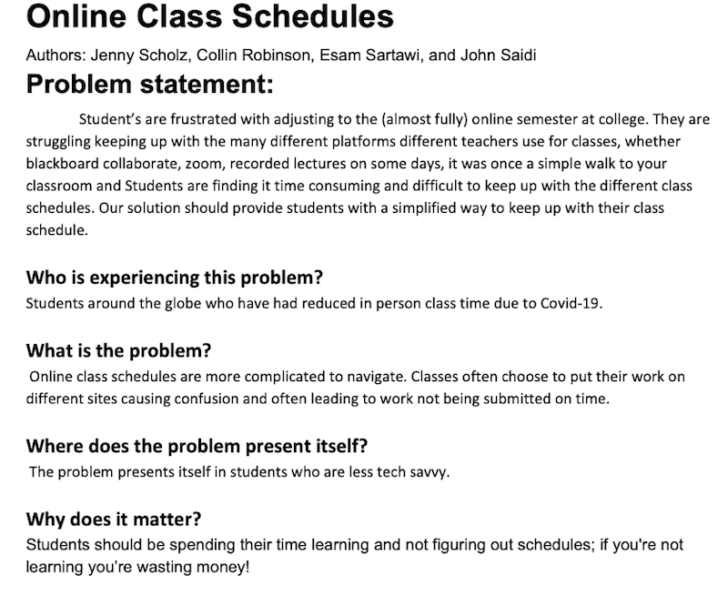

Problem Statement : Online Class Schedules
Students are frustrated with adjusting to the (almost fully) online semester at college. They are struggling keeping up with the many different platforms different teachers use for classes, whether blackboard collaborate, zoom, recorded lectures on some days, it was once a simple walk to your classroom and Students are finding it time consuming and difficult to keep up with the different class schedules. Our solution should provide students with a simplified way to keep up with their class schedule.
Affinity Diagram : Online Class Schedules

My team and I outlined and organized the different data into groups that will be needed for an online scheduler.
Personna: Online Class Schedules
4 unique personnas of a typical online schedule user.
Storyboard: John Smith

A comic strip illustriating the need for a online class schedule.
Sketch: Online Class Schedule
A sketch for online class schedule app.
Paper Prototype: Online Class Schedule

A functional prototype on paper which we can use to ideate.
Usability Testing Script : Online Class Schedule
A scenario and tasks and the outcome of usability tests.
Low-Fi Prototype : Online Class Schedule
A low fi prototype for our online scheduler app.
Hi-Fi Prototype : Online Class Schedule
A hi fi prototype for our online scheduler app.